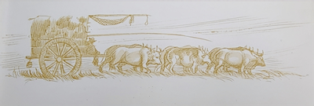
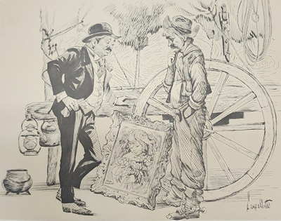
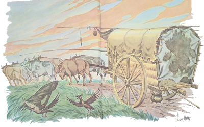
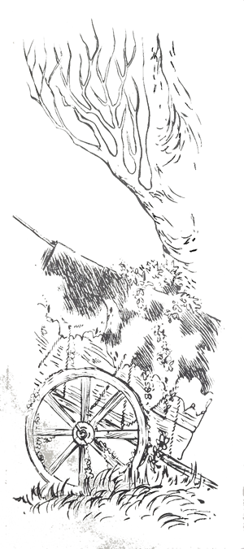

Estavam eles passeando pelas verdejantes campinas, o Arrelia andando pelo caminho e as crianças pela relva convidativa. Iberê aproximou-se do Arrelia e disse-lhe:
- Parece que os caminhos daqui não tem fim, não é mesmo?
O Arrelia fitou demoradamente o longo caminho que se perdia no horizonte:
- É verdade. Dá “vontade” de não aparar mais de andar, de seguir por aí afora, correndo e pulando. Tudo aqui é tão amplo que a gente se sente livre, com disposição!
Continuaram seguindo, parando de vez em quando para admirar a planície que parecia encontrar-se com o céu, apenas pontilhada pelo gado que pastava mansamente e por algumas árvores solitárias.
Mais adiante, aproximaram-se de uma carreta, puxada lentamente por três parelhas de bois. Sérgio ficou impressionado pelo tamanho do veículo e comentou:
- Como essa carroça é grande! Parece mais uma casa!
- Você acertou – respondeu o Arrelia. Em muitas ocasiões, a carreta serve de casa. Essa por exemplo – e apontou para o veículo carregado de coisas de uso doméstico. Estão vendo? Tem de tudo. Até fogão vai dependurado atrás. Há famílias que percorrem grandes distâncias nessas carretas.
Jaci deu risada e disse:
- Mas nesse caso as pessoas morrem de velhice no caminho! Nós estamos andando mais depressa!
- Elas sabem gozar os prazeres da calma. A própria viagem já é um fim e não se preocupam muito com a chegada.
Sempre andando, o Arrelia e as crianças passaram pela carreta. O Arrelia saudou os que iam sentados na frente: um casal e duas crianças. Todos responderam. A pé, guiando os bois, seguia um homem, ainda moço. O Arrelia também o cumprimentou e da mesma forma foi correspondido.
- Puxa, Arrelia – disse Marisa. Até aqui você conhece gente?
Não, não são meus conhecidos.
- Mas você os cumprimentou!
O Arrelia deu risada:
- Você é distraída. Quantas vezes já fiz isso? Nos lugares tranquilos, onde há poucas pessoas, ainda existe tempo para a “cordialidaude”. Ficaria esquisito se eu passasse por eles e não os cumprimentasse, não acha?
- É de fato – concordou a menina.
Carlinhos, depois de olhar para trás, não se conteve:
- Seis bois para puxar uma carroça! É muito boi!

- É só impressão – esclareceu o Arrelia. Se você considerar a distância que vão percorrer, não achará que são muitos, não. Se o peso fosse demasiado para cada animal, eles não poderiam andar tanto.
Jaci entrou na conversa:
- Interessante é o barulho que as rodas fazem, não é mesmo?
- É verdade – respondeu o Arrelia. O ranger das rodas das carretas tem um som tristonho. Parece uma voz se lamentando.
- E não é para menos – interferiu Jaci. Sabendo quanto ainda vão rodar . . .
O Arrelia continuou:
- Sempre gostei de ouvir esse ranger. Faz-me acreditar que a carreta está conversando comigo. Não fiquem olhando para mim com essa cara, não. Sei da estória de um homem que conversava com a sua velha carreta e ela com ele. Vivia sozinho e não tinha outro amigo senão a sua carreta.
O Arrelia entrou com as crianças por outro caminho e prosseguiu:
- Nas longas viagens que ele fazia a fim de comprar e vender objetos, pois já era muito velho para um trabalho mais pesado, contava apenas com o ranger da carreta para quebrar a solidão e responder aos seus lamentos.
- Ó vida longa de sofrimentos – dizia ele quando sentia faltar-lhe o ânimo. É mais longa do que os caminhos que percorro e tem menos alegrias do que essas planícies tem árvores – e fitava uma por uma as poucas árvores recortadas contra o horizonte.
Aí ouvia claramente a voz da carreta dizer-lhe palavras de coragem e de consolo:
- Não desanime! Você ainda ficará bem!
- Mas quando? E de que modo? – perguntava ele.
- Espere e verá – pedia-lhe a carreta.
Por fim, ele se habituara tanto à voz da carreta que evitava ficar parado por muito tempo, pois é claro que só podia ouvi-la quando o veículo rodava. O homem só parava o mínimo necessário e logo seguia adiante. Isto continuou por muito tempo até que os bois, exaustos de tanto andar, pois só descansavam realmente quando o seu dono chegava às cidades e dos levava ao pasto, resolveram fugir. Eles andavam tramando na linguagem dos bois, é evidente, mas a carreta, que estava mais do que habituada com eles, percebeu e falou ao seu dono.
- Os bois pretendem fugir. Se acontecer, ficaremos perdidos nestas paragens até não sei quando.
O homem enraiveceu-se ao ouvir as palavras da carreta e prometeu:
- A próxima vez que pararmos, eles vão levar umas boas aguilhoadas para aprender.
- Não faça isso que não resolverá nada. É só dar-lhes melhor tratamento que eles desistirão da ideia.
Custou muito à carreta convencer o seu dono. Por fim ele aquiesceu, prometendo que a partir do dia seguinte daria mais descanso aos animais.
Algum tempo depois ele percebeu que a carreta estava rangendo com um som diferente. Não conseguia entender uma só palavra.

- O que está acontecendo? – perguntou ele. Por mais atenção que eu preste, não consigo entender o que você está dizendo!
Demorou um pouco para a carreta responder:
- Eu estava falando na linguagem das carretas. Foi por este motivo que você não me entendeu.
Na “verdaude”, ela estava dizendo aos bois que abandonassem a ideia da fuga, pois conversara com o homem e ele estava de acordo em dar-lhes mais descanso. Os bois, que pretendiam fugir naquela noite, prometeram esperar.
Graças à carreta, a paz continuou e eles seguiram por esses longos caminhos. Como antes, sempre que o seu dono se queixava, ela consolava-o, prometendo-lhe dias melhores.
Meses mais tarde, estavam chegando a uma cidadezinha, onde ele pretendia negociar, quando a carreta lhe disse:
- Está perto o momento de sua vida começar a melhorar.
Embora não visse de que modo, ele encheu-se de esperança.
Quando estava vendendo os seus produtos, que eram os mais diversos, uma pobre mulher propôs-lhe, um tanto acanhada, a troca de um velho quadro que ela trazia por uma panela de ferro. Dizia-se viúva completamente sem recursos, que precisava trocar o que possuía para poder viver. O comerciante olhou de relance a pintura que representava uma linda menina colhendo flores. Para que lhe serviria aquilo? Para enfeitar a carreta? É claro que não. Só ia ocupar espaço. Pensou em não aceitar, mas ficou com pena da mulher e fez negócio. Jogou o quadro num canto da carreta, deu à mulher a panela desejada e continuou o seu trabalho.
No dia seguinte, ele continuou a viagem. A carreta disse-lhe:
- Sua sorte já começou a melhorar.
- Começou? Não vejo como.
- Espere e verá.
Numa de suas andanças, ele parou numa cidade um tanto rica e vendeu quase tudo o que havia para vender. Animando-se, pôs à mostra o quadro que trocara pela panela e pensou: “Estou com tanta sorte que é capaz que ainda eu venda esse quadro também.”
Não demorou muito, surgiu um senhor com aparência de ser muito rico e ficou admirando o quadro com toda a atenção. Chegava perto, afastava-se, tornava a chegar, exclamando de vez em quando: “Incrível! Não é possível!” O comerciante seguia todos os gestos do homem com a máxima surpresa. Não compreendia o que podia haver num quadro que merecesse tanto interesse.
- E o que havia como o quadro? – perguntou Carlinhos, já impaciente.
O Arrelia brincou:
- Espere e verá!
- Não brinque, Arrelia! – pediu o menino.
O Arrelia deu umas viravoltas com a bengala e continuou:
- Depois de muito chegar perto do quadro e afastar-se, falar e resmungar, o rico aproximou-se do comerciante e, atropelando as palavras de tanta aflição, gritou-lhe:

- Quanto quer por essa raridade? Quanto? Pode falar!
O outro nem havia conseguido compreender o que estava acontecendo e o rico já lhe colocara nas mãos rolos e rolos de notas.
- Chega? – perguntou. Tome mais isto – e pôs nas mãos do comerciante outro rolo de notas. Posso levar o quadro?
Ainda sem compreender, o dono da carreta fez com a cabeça que sim e o outro agarrou o quadro e foi embora pulando de alegria. Mais alegre ficou o comerciante ao ver que não era pequena a importância que lhe havia caído nas mãos. Com a carreta vazia e o coração cheio de contentamento, ele prosseguiu viagem. Logo que os bois começaram a puxar a carreta, ela falou-lhe:
- Está vendo? Sua sorte continua a melhorar.
Ele perguntou-lhe o que devia fazer com aquele dinheiro. A carreta aconselhou-o:
- Voltemos para a nossa cidade. Lá você comprará alguma terra e alguns bois. Logo será um rico estanceiro.
Começaram a longa viagem de volta. O comerciante não via a hora de chegar à sua cidade a fim de fazer o que a carreta lhe havia aconselhado.
Logo que chegou, ele adquiriu boas terras e começou a criação de gado. Não demorou muito e, sempre seguindo os conselhos da carreta, já podia considerar-se um homem rico. Andava diferente, de cabeça erguida, orgulhoso.
Numa das últimas voltas que deu em sua carreta, ele disse-lhe:
- Agora que você está bem, acho que deveria ir procurar a pobre mulher com quem negociou aquele quadro.
Ele ficou espantado:
- Procurar aquela mulher? E para que? Não entendo.
- Para quê? – surpreendeu-se a carreta. Você não acredita que deveria dar-lhe algum dinheiro? Afinal foi graças ao quadro que ela trocou que você conseguiu ter o que tem.
- Nem eu nem ela sabíamos que o quadro possuía tão grande valor e não deixei de dar-lhe o que ela me pediu em troca. Portanto, não sei por que motivo tenho de preocupar-me.
- Está certo, mas não lhe custaria nada fazer um pouco feliz a quem lhe deu tanta felicidade.
O comerciante ficou meio “zangaudo” com a carreta e pediu-lhe que não tocasse mais no assunto. Ela, por sua vez, ficou muito aborrecida com a modificação havida com seu dono e não falou mais a respeito. Como ficou muito sentida, praticamente não falava mais com ele e o seu ranger tornou-se igual ao das outras carretas. O comerciante, porém, estava muito ocupado para perceber coisa tão sem importância. Cada vez foi usando menos a carreta, até que acabou por abandoná-la num canto do terreiro. Os bois, seus amigos de tantos anos, foram enviados para o pasto e misturados aos outros. Seriam vendidos na primeira oportunidade.
- Que ingrato, não, Arrelia? – disse Iberê, revoltado com a indiferença do homem.
- Se era “ingrauto”! – respondeu o Arrelia.
Como o Sol havia ficado muito quente, Jaci propôs procurarem a sombra de uma enorme árvore, um bonito umbu, pela qual estavam passando. Todos concordaram com a ideia e se sentaram sob a copa espessa, menos Carlinhos, que começou a procurar um meio de trepar na árvore. Por fim desistiu e acomodou-se ao lado do Arrelia, que estava continuando a estória:
- E lá ficou a carreta, “abandonauda” ao Sol e à chuva. Quando passava por ela, o comerciante, agora estanceiro, nem se lembrava de dar-lhe um olhar. Seus negócios ocupavam todo o seu tempo. O mato começou a crescer e a envolver o velho veículo.
Meses depois, o homem notou que os seus negócios já não iam tão bem quanto antes. Um prejuízo aqui, outro ali . . . Estava preocupado. Era preciso fazer alguma coisa. Mas o quê? Não entendia. Uma noite, estava sentado à sua mesa de trabalho, o olhar mais desanimado deste mundo fitando os números que mostravam os seus prejuízos, quando descobriu o motivo:
- A carreta! – gritou, pulando da cadeira. São os conselhos dela que me estão faltando! Amanhã tudo estará arranjado!
Mal dormiu naquela noite. Ficou imaginando como ia proceder com sua velha amiga. Mandaria vir seis bois novos e bonitos. Não, ela não gostaria. Era preciso mandar vir os mesmos velhos bois. Mas ainda estariam no pasto? Ficou preocupado com este pensamento.

Assim que amanheceu, ele montou a cavalo e tocou para o pasto, ansioso para ver se os bois ainda estavam lá. Estavam. Era muita sorte. Por certo haviam sido desprezados por causa de seu aspecto velho e cansado. Mandou separá-los e levou-os de volta, rindo de contente. Assim que chegou, mandou vários empregados porem em ordem a velha carreta. Limparam-na, consertaram-na e ela ficou como nova. O estanceiro ordenou que amarrassem os bois e logo partiu com a velha amiga pelo antigo e longo caminho, como fizera tantas vezes no seu tempo de pobreza. Agora sim ia ouvir novamente os tão úteis conselhos. Os empregados ficaram coçando a cabeça, sem compreender o motivo que fazia o seu patrão sair sozinho com aquela carreta até então abandonada.
Logo que o estanceiro se viu longe dos empregados, começou a falar com ela:
- Então, minha boa amiga, estou precisando de seus conselhos. Os negócios não vão muito bem, sabe? O que me diz?

Nada. Silêncio completo. Tornou a falar, a gritar, mas não conseguiu nenhuma resposta. Aí ele, completamente horrorizado, percebeu que as rodas da carreta não estavam rangendo. Giravam completamente silenciosas.
Ele voltou e passou vários dias pensando no mistério. Por fim concluiu que o motivo era não haver dado dinheiro à pobre mulher que trocara o quadro pela panela de ferro, conforme a carreira lhe pedira. Partiu imediatamente para a c idadezinha e, após muita procura, conseguiu descobrir a “coitauda” lavando roupa num rio um tanto longe dali. Contou-lhe o que havia acontecido, deu-lhe o dinheiro que achou merecido e voltou para sua estância. Agora sim a carreta falaria com ele. Novamente os empregados coçaram a cabeça. Outra vez ele falou e gritou com a carreta, mas nada adiantou. As rodas continuaram a rodar sem nenhum ruído. O que mais podia fazer? Ah! Já sabia. Ela por certo estava ofendida por ter ficado tanto tempo abandonada. A solução era cobri-la de ouro! Sim, seria transformada num rico veículo como jamais existira!
Mandou cobrir e forrar a velha carreta com o melhor ouro. Tudo foi coberto de ouro só. Agora todos estavam realmente “espantaudos” com o procedimento do patrão. Quando ele saía, todos paravam de boca aberta vendo aquele homem falando com a sua carreta dourada.
Foi tudo inútil. Não conseguiu ouvir sequer uma palavra da agora luxuosa carreta. Pouco a pouco ele foi ficando pobre e perdendo tudo o que possuía. Foi obrigado a retirar o ouro que revestia o veículo, que também voltou a ser tão pobre como antes.
Finalmente o homem, para poder viver, foi obrigado a negociar outra vez de cidade em cidade, viajando com sua carreta pelos caminhos sem fim.
- E ela voltou a falar? – quis saber Sérgio.
O Arrelia esticou as pernas, arrumou o chapéu e concluiu:
- Não, não voltou. Ele acabou por perceber que a carreta havia morrido. Tinha morrido de tristeza. Não conseguira suportar a ingratidão de seu dono e o abandono em que ele a deixara. Pelos lugares em que ele passava, todos ficavam parados, surpresos, vendo a enorme carreta mover-se silenciosamente, sem um ruído sequer. Era a única das carretas que não rangia.